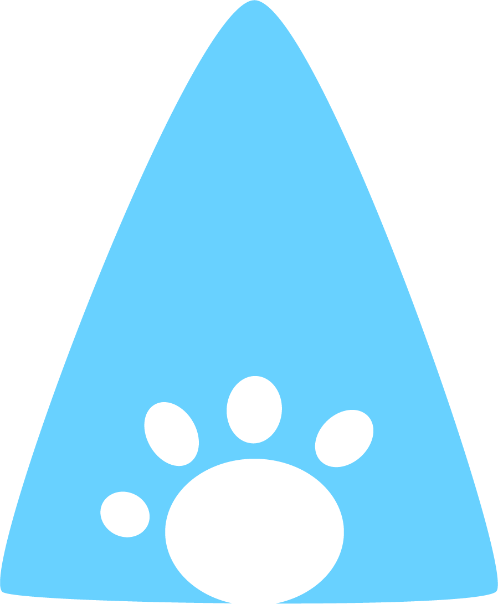

DOPT
 ON'T
ON'T
 HOP
HOP
ABOUT
Eliminating the Shelter:
Finding safe, reliable homes for pets in your community.
People surrender their pets to animal shelters due to many reasons: financial circumstances, relocation, behavioral issues, etc. However, due to overcrowding and underfunding at these shelters, thousands of healthy dogs and cats are euthanized in these shelters.
We want to make adopting and fostering a pet to be a fair and easy process . We want you to participate in home-to-home adoption, rather than home-to-shelter-to-home adoption.
The logistics are simple. We take care of the basic vet bills by coordinating with local vets - so you know you're getting a healthy pet. Adoption and foster fees will depend on the pet and its location.
Why Foster?
Fostering a pet for a temporary amount of time can help relieve nearby shelters' facilities, and have your animal escape euthanasia.
Fostering can be a great opportunity for those who enjoy the experience of companionship, but are unsure of the duration they can keep an animal, or for anyone who simply believes in animal welfare!
Why Adopt?
Adopting a pet is for those who are certain they will be able to support and animal for an extended amount of time. This means taking into consideration of relocation, financial stability, etc. However, as pet-owners know, nurturing an animal can be a highly rewarding experience!